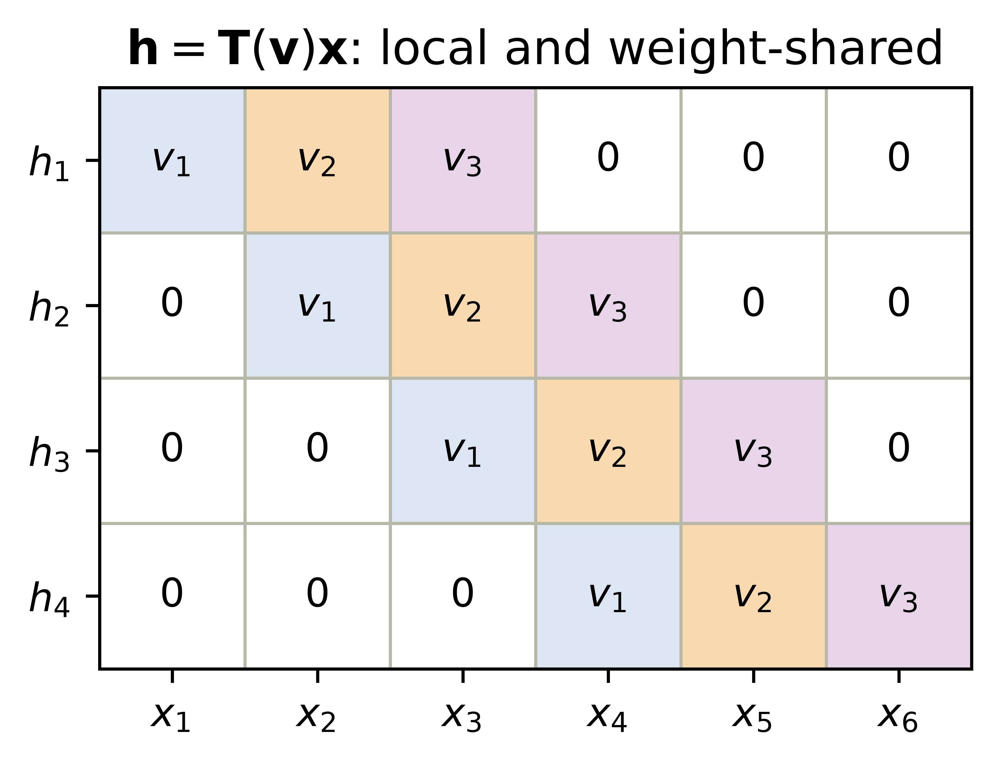

Part I ended with a diagnosis and a prescription. The diagnosis: our MLP’s templates span the whole frame, so they are blind to adjacency and brittle to position (Chapter 6). The prescription, in one sentence: make the template local, and slide it.
This chapter builds that machine with our bare hands — no learning anywhere. It is a piece of classical engineering, decades older than deep learning, and computer-vision experts spent careers designing its templates manually. Understanding the machine in its fixed, hand-crafted form is the whole point of the chapter, because Part II’s revolution (Chapter 8) will consist of exactly one change to it.
Recall the primitive from Chapter 1: a dot product scores an input against a template. When their norms are controlled, its angle component measures similarity. Everything below is that one primitive, applied locally, everywhere.
7.1 Two principles, one strategy
The failures of Chapter 6 tell us what knowledge to build in, the two principles from the lecture:
Spatial locality. Nearby pixels are more related than distant ones. Edges, textures, and patterns emerge from local neighborhoods, not global pixel arrangements.
Translation equivariance. The same feature detector should work regardless of position — a cat’s ear is a cat’s ear whether it appears top-left or bottom-right.
The strategy they suggest: instead of one massive network staring at the entire image, use a small detector that analyzes one patch at a time, and slide it across the image to look for its feature everywhere. To understand what such detectors do, we first look at how vision experts used to design them by hand.
7.2 Start in 1D: the moving average
The core operation appears in its friendliest form when smoothing a noisy signal. A moving average replaces each point by the mean of its neighborhood: locality, with uniform weights:
Figure 7.1: A window of uniform weights, slid along a noisy signal, averaging as it goes: the simplest sliding-window operation, and already recognizably a denoiser.
7.3 To 2D: the recipe
The image version is the same idea with a small 2-D window, and it is worth stating as the five-step recipe from the lecture:
Define a small window of weights, the kernel (for a blur: all positive, summing to 1).
Place the kernel over a patch of the image.
Multiply elementwise: kernel weights against the pixels underneath.
Sum the products into a single output pixel. (Steps 3–4 are one dot product: the patch, scored against a small template.)
Slide the window to the next location and repeat, producing a new image.
Let us expose every sliding patch at once, multiply each by the kernel, and sum. Then we check the result against the framework’s version, following the build-then-verify habit of this book:
Code
def manual_conv2d(x: torch.Tensor, k: torch.Tensor) -> torch.Tensor:"""Cross-correlate one 2-D image and kernel via a view of sliding patches.""" kh, kw = k.shape patches = x.unfold(0, kh, 1).unfold(1, kw, 1) # (Hout, Wout, kh, kw)return (patches * k).sum(dim=(-1, -2)) # one score per patchdef conv2d(x: torch.Tensor, k: torch.Tensor) -> torch.Tensor:return F.conv2d(x[None, None], k[None, None]).squeeze()torch.manual_seed(6050)x_test = torch.rand(10, 12)k_test = torch.randn(3, 3)gap = (manual_conv2d(x_test, k_test) - conv2d(x_test, k_test)).abs().max()print(f"recipe vs. torch.conv2d: max |diff| = {gap:.1e}")
recipe vs. torch.conv2d: max |diff| = 4.8e-07
Also worth noticing before we move on: the output is smaller than the input. A \(k
\times k\) kernel on an \(n \times n\) image produces \((n - k + 1) \times (n - k + 1)\) outputs, because the window must stay inside the frame. What to do about that (and about sliding in bigger steps) is Chapter 8’s business.
7.4 The filter zoo
Here is the remarkable part: the recipe never changes — only the numbers in the kernel do. Different numbers produce completely different specialists. Three classics, applied to a synthetic test scene and to a boot from our Fashion-MNIST subset:
Blur: uniform positive weights summing to 1, the 2-D moving average.
Sharpen: amplify each pixel’s difference from its neighbors.
Edge detection (Sobel): positive and negative weights summing to zero — over any flat region the products cancel and the output is silent; over an edge, a sharp change in values, the sum swings large. A detector that answers one question: does intensity change here, in my direction?
Figure 7.2: One recipe, five kernels. Each column applies a different 3×3 kernel to the same inputs: identity, blur (local average), sharpen, and two Sobel edge detectors. The vertical-edge kernel fires on vertical boundaries; the horizontal one fires on horizontal boundaries.
Study the two Sobel columns for a moment. The vertical-edge detector lights up on the rectangle’s sides and stays silent on its top and bottom; the horizontal detector does the reverse; the diagonal stripes excite both. Nine numbers, and we have built a primitive feature detector — precisely the “small network analyzing one patch” of our strategy, except nobody has learned anything yet.
7.5 Naming the operation
This sliding sum-of-products has a proper name: cross-correlation. With kernel \(V\) of half-width \(\Delta\) and image \(X\):
The deep learning community universally calls this operation a convolution, and so will we. A mathematician’s convolution flips the kernel before sliding; since our kernels will soon be learned parameters, a flipped kernel is just another kernel, and the distinction is inconsequential in practice (Exercise 4 makes you confirm this).
7.6 The property we paid for: equivariance
Now collect the reward that Chapter 6’s MLP could never have. Away from boundaries, slide-and-score treats every position identically \(\rightarrow\) if the input shifts, the output shifts with it, unchanged in content. That is translation equivariance, and it need not be taken on faith:
Code
img = make_shapes()sobel = kernels["Sobel (vert.)"]s =5shifted = torch.zeros_like(img)shifted[:, s:] = img[:, :-s] # input shifted right by 5A = conv2d(shifted, sobel) # filter the shifted imageB = conv2d(img, sobel) # filter, THEN shift the resultB_shifted = torch.zeros_like(B)B_shifted[:, s:] = B[:, :-s]interior = (A - B_shifted)[:, s +2:] # compare away from the blank borderprint(f"filter(shift(x)) vs shift(filter(x)): max |diff| = {interior.abs().max():.1f}")
filter(shift(x)) vs shift(filter(x)): max |diff| = 0.0
Exactly zero on the compared interior. The detector’s report moves with the garment. Contrast Chapter 6: the MLP’s global templates degraded under a 2-pixel shift because position was baked into every weight. Here, position cannot matter to what is detected on the interior, only to where the detection lands. At the frame boundary, cropping, padding, or fill rules can break exact equality; that is why the code excludes the blank-border region.
One precision worth keeping sharp, because the two words will both matter: equivariant means the output moves along with the input (what convolution gives us); invariant means the output does not change at all (what a classifier ultimately wants — “boot”, regardless of position). Equivariance is the raw material; in Chapter 8, pooling will spend some position information to buy local shift tolerance. Exact invariance is a stronger property and must be tested, not presumed.
7.7 The matrix view: a structured, weight-shared linear map
One more pair of glasses, from the lecture’s preview box. Every output pixel is a dot product \(\rightarrow\) the whole operation is linear\(\rightarrow\) cross-correlation could be written as one enormous matrix multiplying the flattened image. But it is a matrix with a rigid structure: almost everywhere zero (locality: each row touches only one patch), and the same nine numbers repeating along its diagonals (sharing: every row is the same template, relocated).
That view makes the economics explicit. A dense layer from our 28×28 images to an equal-sized output would own \(784 \times 784 \approx 615{,}000\) weights. The Sobel detector owns nine — reused at every position. This is Chapter 6’s constraints-are-knowledge callout made concrete: locality zeroes out most of the matrix, equivariance ties the survivors together, and what remains is a linear map with almost nothing left to specify.
Code: draw the sparse weight-shared matrix
from matplotlib.colors import ListedColormapweight_ids = torch.zeros(4, 6)for row inrange(4): weight_ids[row, row:row +3] = torch.tensor([1, 2, 3])fig, ax = plt.subplots(figsize=(5.7, 2.8))ax.imshow(weight_ids, cmap=ListedColormap(["white", "#DCE6F2", "#F8D9B0", "#E7D4E8"]), vmin=0, vmax=3)symbols = {1: r"$v_1$", 2: r"$v_2$", 3: r"$v_3$"}for i inrange(weight_ids.shape[0]):for j inrange(weight_ids.shape[1]): value =int(weight_ids[i, j]) ax.text(j, i, symbols.get(value, "0"), ha="center", va="center")ax.set_xticks(range(6), [rf"$x_{j +1}$"for j inrange(6)])ax.set_yticks(range(4), [rf"$h_{i +1}$"for i inrange(4)])ax.set_xticks(torch.arange(-0.5, 6, 1), minor=True)ax.set_yticks(torch.arange(-0.5, 4, 1), minor=True)ax.grid(which="minor", color="#B8B8A8", linewidth=0.8)ax.tick_params(which="minor", bottom=False, left=False)ax.set_title(r"$\mathbf{h}=\mathbf{T}(\mathbf{v})\mathbf{x}$: local and weight-shared")plt.tight_layout(); plt.show()

Figure 7.3: The 1-D version of convolution as a structured matrix (shown in 1-D only so the pattern is visible). Each output row touches one local three-value window, so most entries are zero. The same three kernel weights repeat along diagonals: locality creates sparsity; sharing ties the nonzero entries together. A 2-D image produces the analogous block-structured matrix.
7.8 The bottleneck: someone has to design the kernel
So why did this classical machinery not solve vision decades ago? Because the kernels are only as good as their designers, and hand-crafted kernels have three limitations the lecture names:
Limited expressiveness. They detect simple, predefined patterns — gradients, blobs, corners. Nobody can write down nine numbers for “cat ear” or “car wheel.”
Manual feature engineering. Choosing which kernels to use, and how to combine them, takes deep domain expertise and endless experimentation — for every new task.
No adaptation. A fixed kernel cannot adjust to a dataset. What works for one task fails for another.
An entire era of computer vision lived inside these constraints, stacking hand-designed detectors into elaborate pipelines. The machine was right; the templates were the bottleneck.
You can hear the question coming. We have a device that is local, weight-shared, and equivariant by construction — with a handful of numbers sitting inside it, currently chosen by hand. Nine numbers. We have spent four chapters building tools that tune numbers against a loss.
What if the template were learnable? That question is Chapter 8, and its answer has a name you already know.
7.9 Okay, so — the machine before the learning
One operation, many specialists: slide a small template, take a dot product at every position (Equation 7.1). Blur, sharpen, and edge detection differ only in the kernel’s numbers.
Locality and sharing are built in: as a matrix, convolution is almost-all-zero with nine numbers repeating — 615,000 weights collapsed to 9.
Equivariance is exact on the interior, not approximate: filter-then-shift equals shift-then-filter wherever both operations see the same pixels. Boundary handling must be specified separately. The next chapter asks how much local shift tolerance pooling can purchase from that equivariance.
Hand-crafting is the bottleneck — expressiveness, engineering cost, no adaptation — and it is exactly the kind of bottleneck this book knows how to break.
(Pencil.) Compute by hand the full output of cross-correlating this \(4\times4\) image with the vertical Sobel kernel: rows \((0,0,1,1)\), \((0,0,1,1)\), \((0,0,1,1)\), \((0,0,1,1)\). Before computing: where should the detector fire?
(Pencil + code.) Design a \(3\times3\) kernel that detects diagonal edges (bottom-left to top-right). State your design rule (what must the weights sum to, and why?), then run it on make_shapes() and check it fires on the stripes.
(Pencil.) Prove translation equivariance from Equation 7.1: substitute the shifted image \(X'_{i,j} = X_{i-s,j}\) and show \(H'_{i,j} = H_{i-s,j}\). Why does the same argument fail for the MLP of Chapter 6? State where the proof applies at a finite image boundary.
(Code.) True convolution flips the kernel: run conv2d with k and with k.flip(0, 1) for the blur and for Sobel. Which outputs differ, which do not, and what property of the kernel decides it?
(Code.) The box blur is separable: show that convolving with the \(3\times3\) uniform kernel equals convolving with a \(3\times1\) column of \(\tfrac13\)s and then a \(1\times3\) row of \(\tfrac13\)s. Count multiplications per output pixel for each route — this trick mattered enormously in the hand-crafted era.